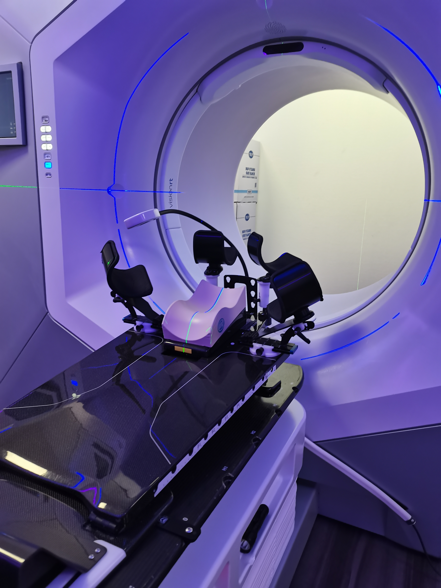

Développement d'un script pour générer automatiquement un
plan de traitement du cancer de sein gauche par la technique VMAT sur TPS Raystation


Technique VMAT
Raystation v.6
Détection de collision entre la table et la patiente ou contentionLatéralité
Latéralité : sein droit, sein gauche
Gestion des grands volumes